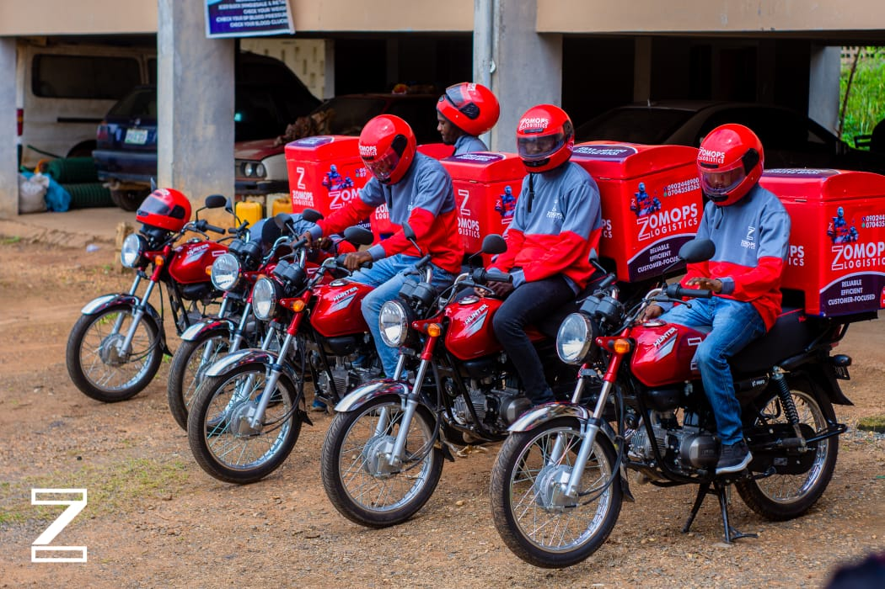

About Us
Vision Statement
To become the leading logistics solutions provider in Nigeria, offering reliable, efficient, and timely delivery services that connect our clients to the world.
Mision Statement
Providing seamless logistics services that meet the needs of our clients by offering innovative, cost-effective, and timely solutions that exceed our clients' expectations, while fostering a culture of reliability, efficiency, and customer satisfaction.
Core Values
Reliability
We are committed to providing dependable logistics services that our clients can trust. We maintain high standards of quality and consistency, ensuring that all deliveries are made on time and in perfect condition.
Efficiency
We strive to optimize our logistics processes to improve efficiency and reduce costs, while maintaining the highest level of service quality. We leverage the latest technologies and best practices to ensure that we meet our clients' needs in the most efficient way possible.
Customer-Focus
We are dedicated to understanding our clients' unique needs and providing tailored logistics solutions that meet those needs. We listen to our clients, communicate clearly, and work closely with them to build lasting relationships based on trust and mutual respect.
Motto
The World at Your Doorstep